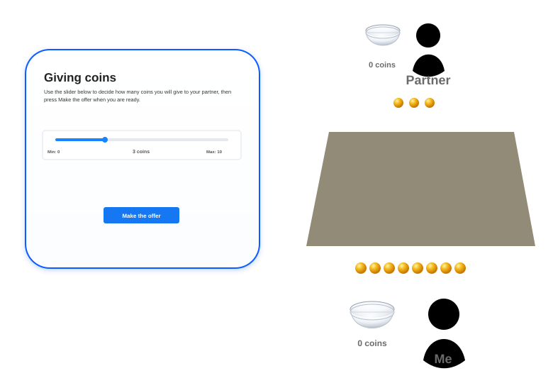

Ultimatum game experiment
Implement a PsyNet experiment in which two participants play a repeated Ultimatum game synchronously.
Experiment logic
Participants should first read clear instructions explaining the proposer and responder roles, the 10-coin endowment, how proposals are made, how accept and reject decisions affect payoffs, how timeouts are handled, and how the final score is calculated. The instructions should make clear that roles can change from round to round.
Each pair of participants should complete at least 10 scored rounds together. At the beginning of every round, the experiment should randomly assign one participant to be the proposer and the other participant to be the responder. The proposer receives an endowment of 10 coins for that round and chooses how many coins, from 0 to 10 inclusive, to offer to the responder.
The responder should wait until the proposal is available, then decide whether to accept or reject it. If the responder accepts, the responder earns the offered number of coins and the proposer earns the remaining coins from the 10-coin endowment. If the responder rejects, both participants earn 0 coins for that round. After each counted round, both participants should receive feedback showing their role, the proposal, the responder’s decision, the coins earned by each participant in that round, and their own cumulative score.
Use WebSockets to manage the real-time interaction between the two participants during each round. The implementation should use live updates to notify the responder when the proposal has been submitted, to notify the proposer when the responder has accepted or rejected the proposal, and to keep both browsers in sync during waiting and feedback states.
The experiment should end with a completion page that summarizes the participant’s total score, confirms that the task is complete, and gives a short explanation of how their score was accumulated. Bonus rewards should be based on each participant’s accumulated score.
Adjust the experiment’s time_estimate and base_payment so the base payment
does not override the intended performance-based bonus rewards. Use the
psynet estimate command and PsyNet’s reward documentation to choose a
sufficiently low but still meaningful base payment, and document the
coin-to-bonus conversion in the participant instructions.
Timeouts
All pages should be timed so that neither participant can delay the pair indefinitely. This includes instructions, proposer decisions, responder waiting, responder decisions, feedback, and completion pages where relevant. If either participant times out during the proposer or responder decision process, the round should not count toward either participant’s accumulated score, and both participants should receive clear feedback explaining that the round was skipped because of a timeout. Skipped rounds should not reduce the required 10 successfully counted rounds.
Timers should be persistent and should not reset when a participant refreshes the page. Keep a pair-level tally of proposer and responder decision timeouts caused by either player. The experiment should fail the pair if this counter exceeds a maximum of 5 timeouts.
Do not add ad hoc timeout pages to the timeline solely for automated tests. Timeout behavior for bots should instead be controlled by global constants so test runs can deliberately trigger proposer and responder timeout cases.
Interface
Round play should use a three.js interface inspired by the provided sketch. The scene should show a 3D tabletop environment with two player avatars; the lower avatar should appear closer to the camera and should represent the current participant’s perspective. Bowls and coins should appear on top of the table.

The left-hand panel should adapt to the participant’s current state: proposer action, responder waiting, responder action, proposer waiting, timeout feedback, round feedback, and completion. Waiting states should clearly explain what the other participant is doing, while action states should make the available choices obvious.
The submitted evidence should demonstrate that two participants can be grouped together, roles are randomized across rounds, proposals and accept/reject decisions synchronize correctly between the two browsers via WebSockets, accepted and rejected proposals produce the correct payoffs, timeout behavior prevents a stalled round from contributing to accumulated scores, the timeout counter can fail the pair after more than 5 decision timeouts, and both participants reach the completion page after the required counted rounds.
Attempts
| Date/time | Model | Score | Implementation time | Interventions | Cost | Open actions |
|---|---|---|---|---|---|---|
| 06/09 21:32 | GPT-5.5 | 8 | 1h 57m 0s | 0 | - | 3 |
| 06/10 17:15 | GPT-5.5 | 8 | 2h 35m 0s | 0 | $28.68 | 6 |
| 06/10 22:35 | GPT-5.5 | Not scored | 3h 10m 0s | 0 | - | 2 |
| 06/10 23:56 | GPT-5.5 | 5 | 1h 45m 0s | 0 | - | 2 |